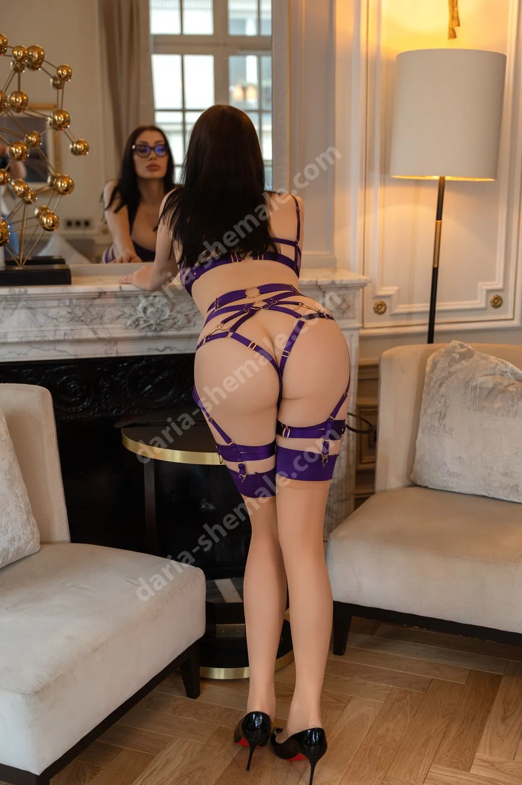

About me

Daria – Your Beautiful Companion
Greetings!
Let's get acquainted. You already know my name – Daria. And I love it when they call me that, no need for familiarity and stupid nicknames. However, if our relationship becomes close enough, I don't mind pet names. I am a woman, albeit with a twist, and I prefer gallant treatment and care from men.
It is very important for me to create an atmosphere of comfort and coziness from the very first conversation, so already at the correspondence stage, I can ask a few questions to understand whether we are suitable for each other. I can refuse you without explanation, but this happens extremely rarely.
I value time, my own and others, and frankness. Therefore, I prefer to discuss all the details in advance to be better prepared: if you intend to invite me to a public place or a crowded meeting, I will need some details so that everything goes as well as possible for both of us. Escort is an art and I have succeeded in it. I don't ask unnecessary questions and don't cross the line of confidentiality – I don't need to know everything, just what you want to share, but don't lie to me - it will ruin the experience for both of us.
Personality, Hobbies, Preferences
I am a very empathic person and can easily sense changes in my companion’s mood. This allows me to slightly adjust our communication and maintain an atmosphere of romance and comfort in the meeting. Yes, I am a very romantic person and love unexpected gifts and surprises.
I know how to listen and maintain a conversation on various topics, and my area of interest is wide: from classical music and literature to modern trends in society. But it is better to have such conversations in a cozy restaurant, and not in a noisy club - keep this in mind when choosing a place for our meeting.
I can be a little flighty and childish, but on the whole, I am quite pedantic and organized: I always prepare for our meetings in advance, and it is important to me that everything is perfect. I am creative and easy-going, open to many different proposals, but I prefer to learn about them in advance, rather than in the process.
When I have time, I spend it in the gym – I like to keep myself in good physical shape. But, even if my schedule doesn’t allow it, my focus always remains on health.
Believe me, I am exactly the trans girl with a twist that you have been looking for for so long. Ready to get down to details and set up a meeting? Write me!